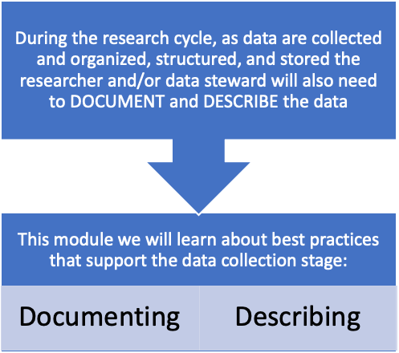
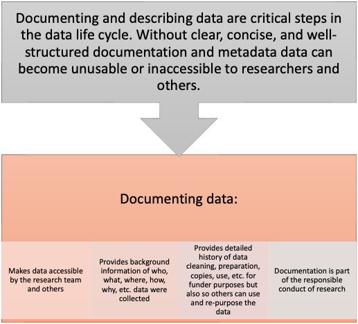
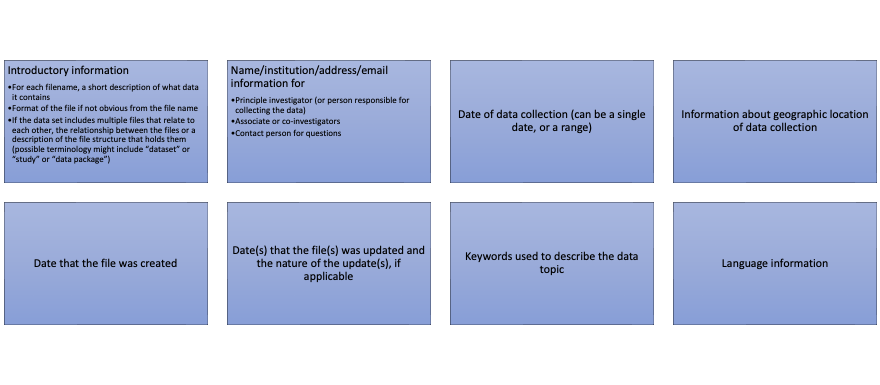
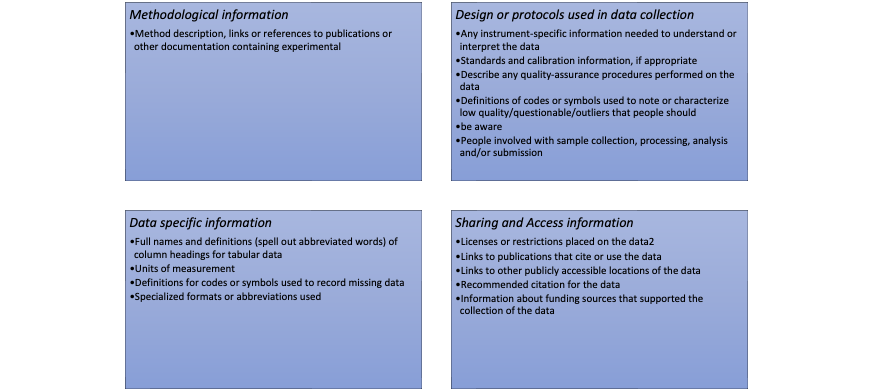
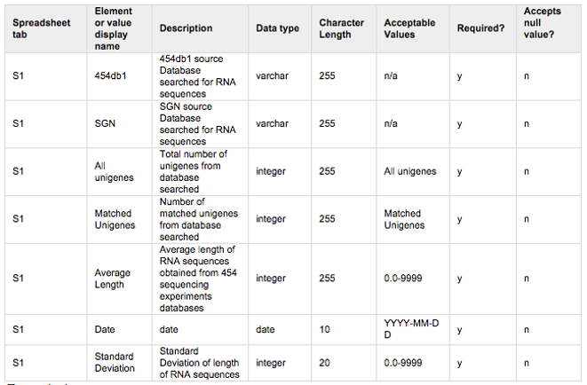
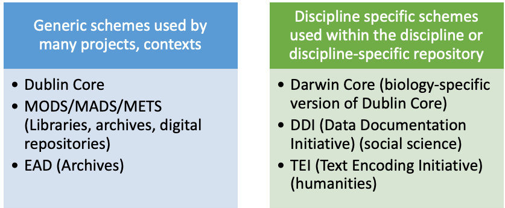
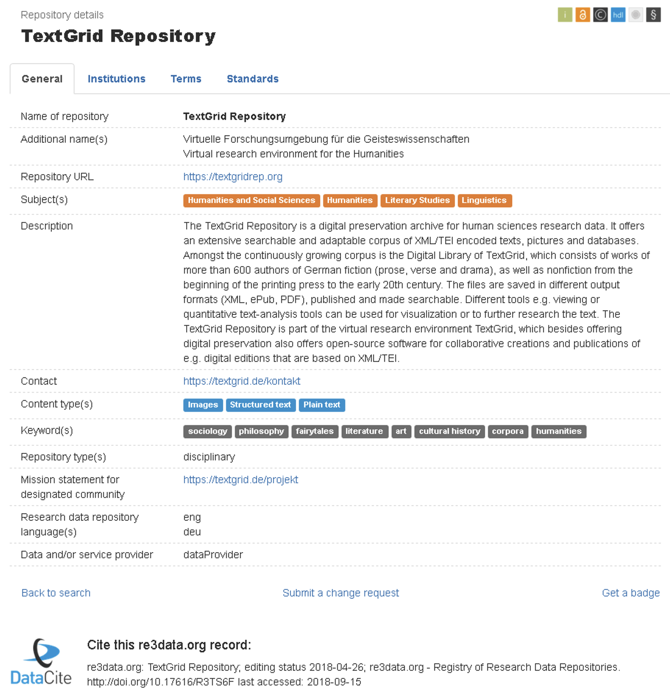
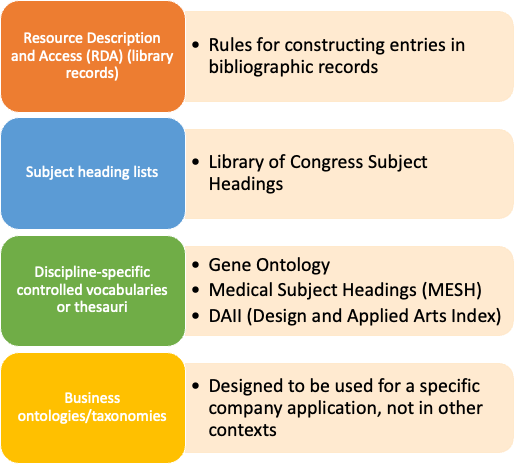

Supporting Data Collection: Documenting and Describing Data
LIS 4/5493: Data Stewardship
Dr. Manika Lamba
Introduction
Documenting Data
Options for Documenting Data
ReadMe Files
Researcher determines what they wish to include
Written in a way that makes sense to researcher
Includes basics about who, what, where, when, why, and how
Can be at file, folder, project level
Data Dictionary
Spreadsheet that describes the structure of the project
Defines the fields in project files such as databases or spreadsheets
Includes technical details such as type of value in fields (text, data, numeric), length of field, etc.
Can also serve as a glossary to terms used in project, fields, etc.
ReadMe Files Should Contain
- Who is creating the record (if there are multiple people, explain each person’s role)
- Who owns the data
- What was done (by each person)
- When was the work done, clearly stating month, date, and year (use a standard format)
- Where it was done (use standard formats if necessary)
- Why research was done
- What project the research is related to
- How research was done (including the methodology)
- What materials were used (e.g., reagents, surveys)
- Links to locations of any related data (e.g., if the file has processed data, where the raw data files are)
ReadMe Files Should Contain (Cont.)
If appropriate the following could be added:
- Coding conventions used, for example, characters used for missing data or null sets, categories, classifications, acronyms, and annotations
- List of folders that relate to a project
- Interpretations
- What could be done next
- Any other elements that will help the researchers use and re-use the data
Best Practices for ReadMe Files
- Create one readme file for each data file, whenever possible.
- It is also appropriate to describe a “dataset” that has multiple, related, identically formatted files, or files that are logically grouped together for use
- Name the readme so that it is easily associated with the data file(s) it describes.
- Write your readme document as a plain text file
- To avoid proprietary formats such as MS Word. Format the readme document so it is easy to understand
- Format multiple readme files identically.
- Present the information in the same order, using the same terminology.
- Use standardized date formats.
- Suggested format: W3C/ISO 8601 date standard, which specifies the international standard notation of YYYYMMDD or YYYYMMDDThhmmss.
- Follow the domain conventions of your discipline for taxonomic, geospatial and geologic names and keywords.
- Whenever possible, use terms from standardized taxonomies and vocabularies
Recommended Minimum Content for Data
Recommended Minimum Content for Data (Cont.)
Data Dictionaries
- Define the fields in project files such as databases or spreadsheets
- Include technical details such as type of value in fields (text, date, numeric), length of field, etc.
- Can also serve as a glossary to terms used in project, fields, etc.
Data Dictionary: Example
Describing Data
- Metadata = structured data about data
- It is important to make a clear distinction between data and metadata
- Data is what is gathered or generated as part of research
- Metadata describes the data or data set(s) and makes it
FindableAccessibleInteroperableRe-useable
Types of Metadata
Administrative:related to the use, management, and encoding processes (technical, rights management, preservation)Descriptive:describes the work for purposes of discovery and identification (library catalog records, repositories)Technical:details the creation or storage processes or formats of the dataStructural:indicates how compound objects are structuredPreservation:describes provenance of data and its archival management
National Information Standards Organization, 2004
Metadata Schemes
Examples
Standards Used with Metadata Schemes
